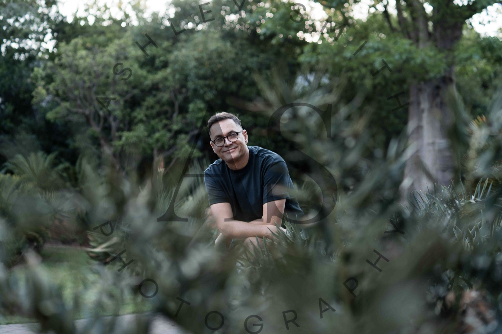

Gay Men Connect
Hosted by That Midlife Gay
Start saying the thing that's true for you. One honest conversation at a time.
The first circle is on Monday 4 January 2027.
You don't need to prepare anything or arrive with something profound to say. You just need to be there.
This isn't about fixing each other. It's about being present, listening and remembering that we don't have to navigate life alone.

I begin by welcoming everyone, explaining the agreements and taking a few moments to help us settle. We take a breath together, become present, and remember why we've chosen to be here.
We check in with each other. It's an opportunity to share what's happening in your life, how you're feeling, what you're struggling with or what you're celebrating.
Some weeks we may explore a theme, reflect on a question or take part in a simple exercise. Other weeks, we'll let the conversations and experiences of the men in the circle guide us.
We close with a moment of reflection, a chance to share what we're taking away, and a conscious check-out before we return to our everyday lives.
There's no pressure to share. Sometimes simply showing up and listening is enough.
The circle is an inclusive space for all men, regardless of sexual orientation, race or religious beliefs.
That Midlife Gay is primarily a space for gay, bi, trans and queer men, but I also want to welcome our straight brothers and allies. I believe there's something valuable in men with different experiences coming together, listening to each other and finding common ground.
As a gay man, I've deliberately put myself in spaces with mostly straight men, from weekends in the woods to men's work retreats. It wasn't always comfortable. At times it was deeply triggering. I felt that familiar need to perform a certain version of myself to fit in. Some of the men reminded me of the playground bullies and the high school jocks I'd spent much of my adult life competing with, while wanting to hide from them at the same time.
But something unexpected happened when I started allowing myself to be seen.
These men didn't reject me. They saw me. They supported me. They held space for me. It meant a great deal to me, and I believe it created something meaningful for them too.
It's one of the reasons I want this circle to be open to all men. We don't all have the same experiences, and we can learn so much from listening to experiences different from our own.
This circle is for men who want to be seen and heard, and who are willing to see and hear other men, regardless of how they identify.
You don't need to have everything figured out. You just need to be willing to show up.
This isn't a dating group, a networking opportunity or a place to sell something.
It isn't a space for judging, shaming or trying to change another man.
And a men's circle isn't therapy. Meaningful emotions and personal experiences may come up, but the circle is not a substitute for professional mental health or trauma support. If you need that kind of support, the details are at the bottom of this page.
The circle is free, but I'd love for men to attend regularly. When we see familiar faces each week, we have the opportunity to build trust and get to know each other beyond a single conversation.
Nobody has to share more than they're comfortable with. This is a space where we can be ourselves without feeling judged or needing to impress anyone. I ask you to come with an open heart, willing to listen, and to share what you're comfortable with, if anything at all.
Every Monday at 6pm UK time, for 90 minutes. I chose six o'clock so men in Europe and North America can both join. In January, that's 7pm in most of Europe, 1pm in New York and 10am in Los Angeles.
The first circle is on Monday 4 January 2027. We'll begin the year with a New Year's intention setting circle: a chance to reflect on what we're ready to leave behind, what we want to welcome into our lives, and how we want to show up for ourselves in 2027. Registration is open now.
"Heni is inviting us to the table. Inviting us to learn from one another..about the closet, the room it was built in, the house that surrounds the room and the beautiful gardens beyond."Guy Rhodes
Some men want to go further than a circle allows. For them, I offer three months of one-to-one coaching: twelve 50-minute sessions on Zoom, with support in between. The first step is a free 45-minute call.
Every Monday at 6pm UK time, online, for 90 minutes. Up to 15 men. Free.
Come as you are. Leave the mask at the door.